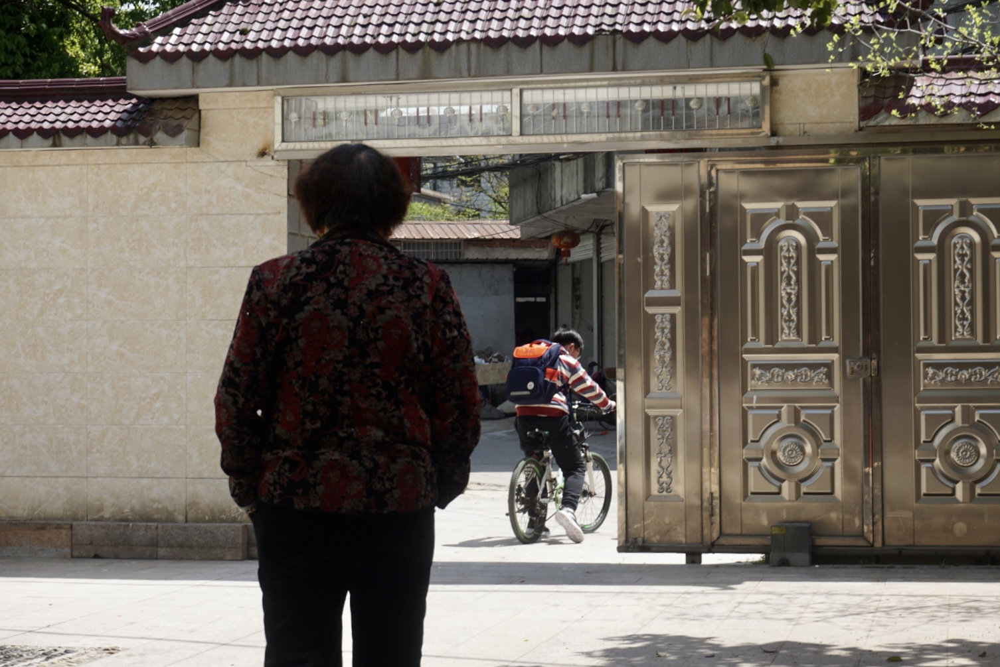

A PERSONAL COLLECTION OF LOSS
回不去的老家二十条残缺的家庭记录
我在江西老家留下、也从家人那里保存下来的片段。亲人、童年、饭菜、景色和声音，让这个地方成为我的故乡。
它们证明一些事情发生过，却无法把当时的生活完整带回来。

家庭记录
20 条记录 / 12 图片 · 3 视频 · 3 声音 · 2 文字
正在打开档案……
后记
回不去的老家
我收藏的是我在江西老家的家庭生活：爷爷奶奶的家，以及从那里延伸出的亲人、童年、饭桌、散步和声音。我还能回到那些地方，但亲人会离去，房子和日常会改变，原来的生活无法重来。
这二十条记录包含十二张照片、三段视频、三条声音和两篇文字。有我拍下的片段，也有我保存的童年照片。烟花、梦湖、早餐和游泳看似分散，却都发生在我与家人共同生活或回到老家的过程中。爷爷和奶奶是这些片段的中心，也是我与故乡的纽带。爷爷去世后，我感到这条纽带正在松动。
我制作这份档案，是想看看自己究竟留下了什么。童年照片证明我曾在那里，但我不记得当时发生了什么；饭菜还看得见，香味和口感却回不来。声音留下了唱歌和弹琴，却没有完整留下身体感觉、窘态和亲人之间的关系。连为什么按下拍摄键，我有时也忘了。
每条 not_captured 都承认一个缺口。certainty 保留我对记录的确定程度；确定发生过，也不等于保存完整。这份收藏是我的残缺视角，无法替亲人说出他们的记忆。
收藏说明 ↗ GitHub ↗